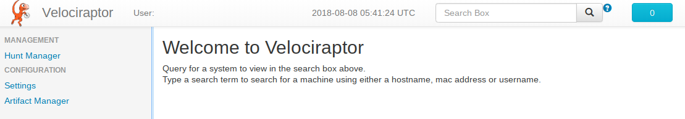

Introducing Velociraptor
Hunting and responding like a raptor!
At Velocidex we have been running open source endpoint monitoring tools for our clients in order to detect and respond to incidents. One of our favorite tools is GRR, developed by Google internally and then released as open source. GRR is a very powerful tool, with a polished UI and good documentation.
Unfortunately the open source version released by Google suffers from some shortcomings and so we have decided to develop a new project, built on the shoulders of giants called Velociraptor.
These are Velociraptor’s design goals:
- Focus on data collection. Velociraptor’s primary use case is to collect data and export it to other systems. Velociraptor does no analysis itself and therefore has no need for a complex data model.
- Flexibility - Velociraptor can adapt easily to new requirements without needing to redeploy either clients or servers. Using VQL (Velocidex Query Language) provides flexibility in the type and number of queries that are used to rapidly adapt to changing requirements. VQL allows us to collect just the information needed and no more in an adaptive way.
- Remove abstractions. Velociraptor aims to be as simple to understand as possible. The default data store simply stores files in the file system which may be easily inspected by the user. No special tooling is required to script or manage Velociraptor. Reduce demand on the data store. Rather than increase the data store requirements, we want to simplify the design to the point that requirements on the data store are so low, one can run a medium to large sized deployment with very few resources (down to perhaps a single server machine). In fact the default data store does not even use a database, but simply uses flat files.
- Simplify everything! Velociraptor aims to be very simple to run and administer. We remove a lot of the GRR functionality that we dont find we use often. Velociraptor ships as a single, statically linked executable which can perform all actions necessary for deployers.
In short we really wanted something like this:

Quick Start
In this section we go through a typical deployment scenario of Velociraptor.
Download the binary
Velociraptor ships as a single statically compiled binary. It has no external dependencies and does not require installing as a package. Simply download the binary from the release page for the OS you will be deploying on. The same binary is used for the client and the server.
Generate a configuration file
Velociraptor needs a configuration file to start serving requests. You can generate a new configuration file using the velociraptor config generate command. Note that this prints a new configuration into stdout so you might want to redirect it into a new file (NOTE: The file contains key material so ensure it has appropriate permissions). Below we highlight the parameters you will probably want to change:
$ velociraptor config generate | tee /etc/velociraptor.config.yaml
Client:
server_urls:
- http://localhost:8000/
writeback_linux: /etc/velociraptor.writeback.yaml
writeback_windows: /Program Files/Velociraptor/velociraptor.writeback.yaml
Datastore:
filestore_directory: /tmp/velociraptor
implementation: FileBaseDataStore
location: /tmp/velociraptor
Frontend:
bind_address: 127.0.0.1
bind_port: 8000
GUI:
bind_address: 127.0.0.1
bind_port: 8889
The configuration file contains default values for most settings and new keys for cryptographic material so it is expected that you edit the file to customize it for your local deployment. The config file is divided into sections. Here is a quick overview:
- The Client section is used to configure clients.
- Server_urls is a list of URLs the client will attempt to connect to. If a connection to one fails it will try the others repeatedly. It is wise to include several URLs here or at least a DNS name so the server may be easily t just use a single IP address here). This will usually be different from Frontend bind address in a proper deployment but for testing it may be the same.
- Writeback: The writeback path is where clients will write their local persistent state (for example, their private keys). You can specify a different location for windows, osx and linux clients.
- The Datastore section specifies where to store the data for the server. Be sure to update the location to a more permanent path. The filestore_location is a path that receives uploaded files which may be large.
- The Frontend is the server component which receives poll messages from clients. It should be exposed to the internet on a public interface so clients may reach it. This section also contains the server’s certificate as signed by the CA (you can rotate server keys using the velociraptor config rotate_keys command.
- The GUI is the Velociraptor web admin UI. Do not expose this on a public interface without enabling TLS! We recommend to only enable it on the loopback interface and use SSH tunneling to access it over HTTP.server
Client configuration
Clients receive a subset of the complete configuration which enables them to connect to the server. You can extract the client’s configuration using the velociraptor config client command.
$ velociraptor --config /etc/velociraptor.config.yaml config client
Client:
ca_certificate: |
-----BEGIN CERTIFICATE-----
MIIDIDCCAgigAwIBAgIQEPaF6CPMLOlixEmpgHhvsTANBgkqhkiG9w0BAQsFADAa
abIwLMojhIxVFXZOZ0p2ZhYkeKJwNGbiA9rBJR2iKxeJOa0B
-----END CERTIFICATE-----
nonce: UwtTRfezXIU=
server_urls:
- http://localhost:8000/
writeback_linux: /etc/velociraptor.writeback.yaml
writeback_windows: /Program Files/Velociraptor/velociraptor.writeback.yaml
Running the server
Start the server using the frontend command:
$ velociraptor --config velociraptor.config.yaml frontend
INFO:2018/08/08 15:39:09 Launched gRPC API server on 127.0.0.1:8888
INFO:2018/08/08 15:39:09 GUI is ready to handle requests at 127.0.0.1:8889
INFO:2018/08/08 15:39:09 Frontend is ready to handle client requests at 127.0.0.1:8000
You can now verify the server is working by connecting to the GUI with a web browser:
Running the client
The client is run using the s configuration
$ velociraptor --config /etc/velociraptor.client.config.yaml client
velociraptor: error: Unable to load writeback file: open /etc/velociraptor.writeback.yaml: no such file or directory
Genering new private key....
Wrote new config file /etc/velocirpator.writeback.yaml
INFO:2018/08/08 16:02:22 Starting Crypto for client C.039f18494e6dae95
INFO:2018/08/08 16:02:22 Starting HTTPCommunicator: [http://localhost:8000/]
INFO:2018/08/08 16:02:22 Sending unsolicited ping.
INFO:2018/08/08 16:02:22 Updated server serial number in config file /etc/velociraptor.writeback.yaml to 1
INFO:2018/08/08 16:02:22 Received PEM for VelociraptorServer from http://localhost:8000/
INFO:2018/08/08 16:02:22 Received response with status: 406 Not Acceptable
INFO:2018/08/08 16:02:22 Enrolling
INFO:2018/08/08 16:02:23 Received response with status: 406 Not Acceptable
INFO:2018/08/08 16:02:25 Sending unsolicited ping.
INFO:2018/08/08 16:02:25 Received response with status: 200 OK
INFO:2018/08/08 16:02:25 Checking foreman
INFO:2018/08/08 16:02:26 Received response with status: 200 OK
INFO:2018/08/08 16:02:27 Sending unsolicited ping.
INFO:2018/08/08 16:02:27 Received response with status: 200 OK
We can see that when a new client starts for the first time it goes through a number of steps:
- The writeback file is created with a new client private key (and a client ID).
- The client communicates with the server but receives a 406 status. This initiates the enrolment flow.
- The server schedules an Interrogate flow on the client, which issues a number of VQL queries.
- We can now search for the client using the GUI search box.
Introducing Velociraptor
This post introduces Velociraptor - a new end point monitoring and IR tool built upon GRR’s groundwork and experience. To be clear, we reused some of GRR’s code and some design elements, but Velociraptor is a new project and is largely a rewrite of GRR’s codebase. Like GRR, Velociraptor is released under an open source license and is a community project hosted on https://gitlab.com/velocidex/velociraptor.
It is still very early days and we would love to receive feedback and suggestions. This is the first technology preview release and we hope to make a more stable and comprehensive release in the coming months. As Velociraptor becomes more battle tested we hope the codebase will stabilize.
The near term roadmap is:
- Improve support for more operating systems. Especially Windows:
- Registry based VQL plugins.
- NTFS support for raw disk access.
- Memory scanning and rudimentary Memory analysis
- Design a more efficient client/server communication mechanism - long polling is problematic since clients only poll infrequently (e.g. every 10 minutes). We want to be able to control all clients quickly.
- Develop a library of VQL expressions which may be reusable. This should be similar to GRR’s idea of Artifacts but be more geared towards VQL.
Please play with it and send feedback to velociraptor-discuss@googlegroups.com